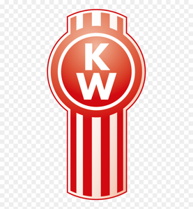

Test and systems engineering, precision fabrication, and a lot of time in the machine shop.
Foster an inclusive hall community through meetings and peer engagement; conduct safety and wellness checks; connect residents with campus resources; serve as biweekly on-call proctor responding to emergencies and providing crisis support.
